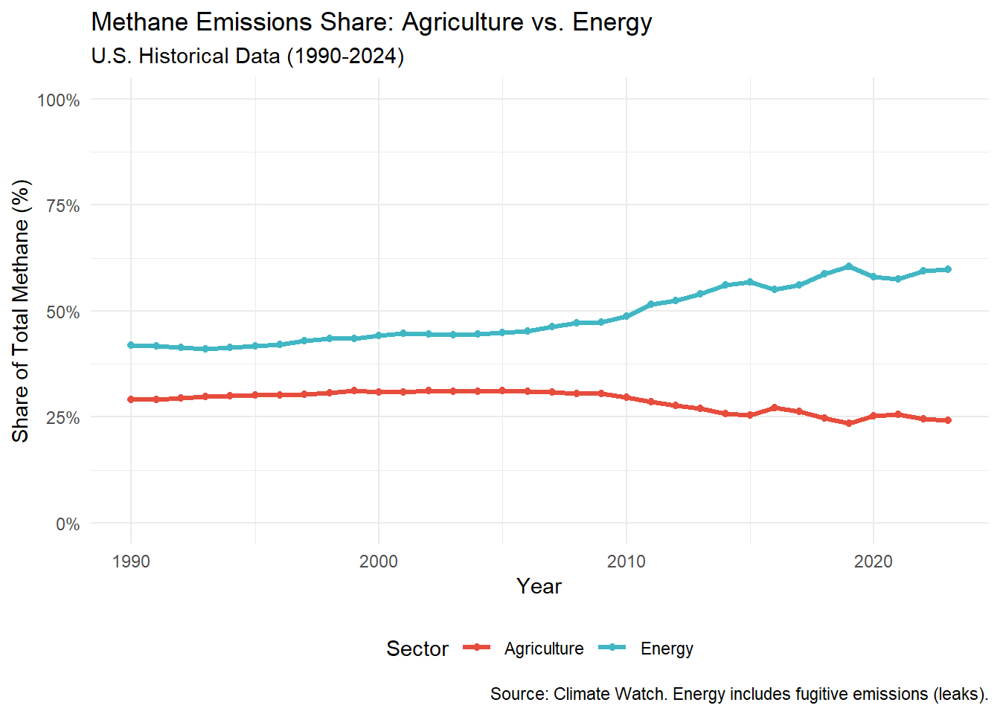
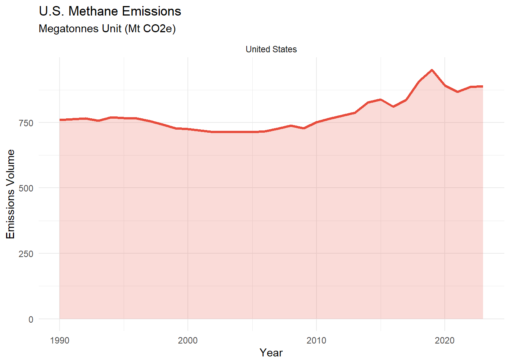

This project has been a roller coaster, since defying the topic, sources and all the questions. Defying the scale of each individual question was something fun and stressful to do. While my teammates and I were working in getting the data and creating graphs to answer each question, we sometimes realized we were “crossing” to different topics or analyzing information of each other’s question. My specific question was How has live stock’s share of U.S methane emissions changed overtime? To solve this question, I use Climate Watch as my main resource. First I needed to get access to the website information and then download it to my server to have it available in my computer and avoid continuously using the server benefit of downloading the information a 100 times. In the following code, I saved JSON responses to pull the data
started by identifying the Global methane emissions produced by the Unites States from 1990 to 2024, then I analyzed the main contributors of methane emissions, which are agriculture and energy to deep dive into the data from 2017-2024, and finally make a prediction of what would be the impact on CH4 emissions in the country if the US implement strongly the Paris agreement to reach the 1.5 C.
Data Acquisition
# CLIMATE WATCH: ### Historical U.S. Methane Emissions (1990–2024) 5-year grouped CH4 emissions by sectorlibrary(httr2)library(jsonlite)library(dplyr)
Attaching package: 'dplyr'
The following objects are masked from 'package:stats':
filter, lag
The following objects are masked from 'package:base':
intersect, setdiff, setequal, union
The following object is masked from 'package:readr':
col_factor
data_dir_group_project <-file.path("data", "group_project")if (!dir.exists(data_dir_group_project)) dir.create(data_dir_group_project, recursive =TRUE)data_dir_climate_watch <-file.path(data_dir_group_project, "climate_watch")if (!dir.exists(data_dir_climate_watch)) dir.create(data_dir_climate_watch, recursive =TRUE)# 1) Helper to save JSON responsessave_json_response <-function(url, file_name) { out_path <-file.path(data_dir_climate_watch, file_name) resp <-request(url) |>req_perform()writeBin(resp_body_raw(resp), out_path) out_path}# ----------------------------# 2) Pull metadata: data sources, gases, sectors# (These endpoints are part of the Climate Watch API /api/v1 structure) [1](https://climatewatch-vizzuality.github.io/climate-watch/_docs/dev/API)# ----------------------------data_sources_file <-save_json_response("https://www.climatewatchdata.org/api/v1/data/historical_emissions/data_sources","climate_watch_data_sources.json")gases_file <-save_json_response("https://www.climatewatchdata.org/api/v1/data/historical_emissions/gases","climate_watch_gases.json")sectors_file <-save_json_response("https://www.climatewatchdata.org/api/v1/data/historical_emissions/sectors","climate_watch_sectors.json")data_sources <-fromJSON(data_sources_file, flatten =TRUE)$datagases <-fromJSON(gases_file, flatten =TRUE)$datasectors <-fromJSON(sectors_file, flatten =TRUE)$data# 3) IDssource_id <-274gas_id <-554# CH4# Pull ALL sectors so bars can be color-coded by sectorsector_ids <- sectors$id# ----------------------------# 4) Historical emissions request (ALL sectors, USA, 1990–2024)# Parameters are passed as arrays using explode, matching your style. [1](https://climatewatch-vizzuality.github.io/climate-watch/_docs/dev/API)# ----------------------------historical_req <-request("https://www.climatewatchdata.org/api/v1/data/historical_emissions") |>req_url_query(`data_sources[]`= source_id,`gases[]`= gas_id,`sectors[]`= sector_ids, `regions[]`="USA",start_year =1990,end_year =2024,.multi ="explode" )historical_file <-file.path( data_dir_climate_watch,"climate_watch_historical_emissions_usa_ch4_all_sectors_1990_2024.json")historical_resp <- historical_req |>req_perform()writeBin(resp_body_raw(historical_resp), historical_file)# ----------------------------# 5) Load JSON -> data frame # ----------------------------climate_watch_raw <-fromJSON(historical_file, flatten =TRUE)cw_df <-as_tibble(climate_watch_raw$data)# ----------------------------# 6) Unnest emissions# ----------------------------cw_long <- cw_df |>unnest(emissions)# Identify the two new columns that came from emissions (usually year + value)new_cols <-setdiff(names(cw_long), names(cw_df))if (length(new_cols) !=2) {stop("Expected exactly 2 columns inside `emissions`, but found: ",paste(new_cols, collapse =", "),"\nRun: names(cw_df$emissions[[1]]) to see the nested column names." )}cw_long <- cw_long |>rename(year_raw =!!sym(new_cols[1]),value_raw =!!sym(new_cols[2]) ) |>mutate(year =suppressWarnings(as.integer(year_raw)),value =suppressWarnings(as.numeric(value_raw)) ) |>filter(!is.na(year), !is.na(value))# ----------------------------# 7) Filter to CH4 + 5-year bins# ----------------------------cw_ch4 <- cw_long |>filter(gas =="CH4") |>filter(year >=1990, year <=2024) |>mutate(period_start = year - (year %%5),period_end = period_start +4L,period =paste0(period_start, "–", period_end) )
# Load the Data from my local computer - FAOSTAT file_path <-file.path("data", "group_project", "faostat", "methane_us_1990plus.csv")if(file.exists(file_path)) { methane_us <-read.csv(file_path)message("Data loaded successfully!")} else {stop("File not found! Make sure you are in the correct R Project.")}
Data loaded successfully!
# Map the loaded data to the object name used in your analysis scriptmethane_us_1990plus <- methane_us
DATA IMPLEMENTATION
#Setting both sources in Kt units # 1) Prepare Climate Watch (Global Totals, and changing unit to kt)global_total <- cw_ch4 |>group_by(year) |>summarize(global_kt =sum(value, na.rm =TRUE)*1000)# 2) Prepare FAOSTAT (Livestock Specific, already in kt)livestock_ch4 <- methane_us_1990plus |>group_by(Year) |>summarize(livestock_kt =sum(Value, na.rm =TRUE))# 3) Merge and Calculate Shareshare_analysis <- livestock_ch4 |>inner_join(global_total, by =c("Year"="year")) |>mutate(livestock_share = (livestock_kt / global_kt) *100 )# 4) View the Trendprint(head(share_analysis))
#1. Historical Context: Global Contribution To follow up on the discussion about U.S. methane and its specific sources, here is a timeline of the most significant industrial agricultural events from 1990 to 2024. This period reflects the U.S. footprint within the global climate landscape. Our analysis identifies that Agriculture and Energy are the two dominant activities responsible for the vast majority of U.S. methane. So here I filter those sectors to create a plot considering only those factors and see their impact. Together, these two sectors account for about 70% of all anthropogenic methane in the U.S.
#METHANE EMISSIONS - ENERGY VS. AGRICULTURE # 1. Prepare the combined datacombined_analysis <- cw_long |>filter(gas =="CH4") |>filter(sector %in%c("Agriculture", "Energy", "Total excluding LULUCF")) |>group_by(year, sector) |>summarise(total_val =sum(value, na.rm =TRUE), .groups ="drop") |># Pivot to get Total in its own column for the share calculationpivot_wider(names_from = sector, values_from = total_val) |>rename(Total_Methane =`Total excluding LULUCF`) |># Calculate shares for bothmutate(Agriculture = (Agriculture / Total_Methane) *100,Energy = (Energy / Total_Methane) *100 ) |># Pivot back to long format for easy plottingpivot_longer(cols =c(Agriculture, Energy), names_to ="Sector", values_to ="Share")# 2. Create the combined plotggplot(combined_analysis, aes(x = year, y = Share, color = Sector)) +geom_line(size =1.2) +geom_point() +scale_color_manual(values =c("Agriculture"="#e74c3c", "Energy"="#41B7C4")) +scale_y_continuous(labels =label_percent(scale =1), limits =c(0, 100) ) +labs(title ="Methane Emissions Share: Agriculture vs. Energy",subtitle ="U.S. Historical Data (1990-2024)",x ="Year",y ="Share of Total Methane (%)",caption ="Source: Climate Watch. Energy includes fugitive emissions (leaks)." ) +theme_minimal() +theme(legend.position ="bottom")
Warning: Using `size` aesthetic for lines was deprecated in ggplot2 3.4.0.
ℹ Please use `linewidth` instead.

1990s: The Dawn of Precision & GMOs • 1990 – Food, Agriculture, Conservation, and Trade Act (1990 Farm Bill): Established the first federal standards for organic food and increased focus on soil conservation. • 1993: EPA Natural Gas STAR Program – The U.S. EPA launched this voluntary partnership with oil and gas companies to encourage the adoption of cost-effective leak detection technologies. • 1996: Landfill Methane Rules – The U.S. implemented the first major federal regulations requiring large landfills to capture and flare methane, leading to significant long-term reductions in the waste sector. • 1996 – The GMO Revolution: The first large-scale commercial planting of genetically modified crops (like Roundup Ready soybeans) began. This shifted the industry toward monoculture and large-scale industrial spraying. 2000s: Consolidation & Biofuels • 2002 – Farm Security and Rural Investment Act: Significantly increased subsidies for large-scale commodity crops (corn, soy), further encouraging the “industrial” model of farming. • 2005 – Energy Policy Act: Created the Renewable Fuel Standard (RFS), mandating that billions of gallons of corn-based ethanol be blended into U.S. gasoline. This caused a massive expansion of industrial corn acreage. • 2008 – Peak Industrial Concentration: This decade saw massive consolidation, with a few firms controlling the majority of the global seed and chemical markets. 2010s: The Methane & Tech Boom • 2012: The Shale Revolution Peak – The massive expansion of hydraulic fracturing (fracking) in the U.S. led to a surge in natural gas production. While gas replaced coal (lowering CO2), it caused a spike in methane leakage from infrastructure. • 2015 – EPA Methane Reporting: The EPA began stricter Subpart W reporting, requiring large-scale facilities to report greenhouse gas emissions, though agriculture remained largely exempt from the toughest limits, because in 2014, Satellite observations reveal that methane leaks from oils and gas were most higher than industry reports had suggested. In 2016, this EPA initiative pushed companies to make specific, transparent commitments to reduce leaks across their entire operations. • 2018 – Precision Ag Connectivity Act: Focused on bringing high-speed internet to rural areas to support the “Internet of Things” (sensors on cows, soil, and tractors) to manage methane and waste in real-time. 2020–2024: Climate Mandates & The “Super Pollutant” Push • 2020 – The Pandemic Shift: Supply chain disruptions led to a temporary drop in industrial output, but highlighted the vulnerability of centralized “factory farm” models. • 2021 – U.S. Methane Emissions Action Plan: The Biden-Harris administration launched a comprehensive plan to slash methane emissions. For agriculture, this focused on “Climate-Smart” practices and voluntary incentives for manure digesters. • 2021: The Global Methane Pledge (GMP) – Launched at COP26 by the U.S. and EU, over 150 countries have now joined, committing to a collective 30% reduction in methane emissions by 2030. • 2022 – Inflation Reduction Act (IRA): Provided nearly $20 billion for “Climate-Smart Agriculture,” the largest investment in conservation since the Dust Bowl. Much of this is aimed at reducing methane from livestock. • 2022: U.S. Inflation Reduction Act (IRA) – This landmark law introduced the first-ever federal “Methane Waste Emissions Charge,” effectively taxing oil and gas companies for excessive methane leaks • 2024 – National Strategy for Reducing Food Loss and Waste: A first-of-its-kind strategy to cut food waste in half, which directly targets methane leaking from landfills (the Waste sector in your Big Four). 2024: EPA Final Methane Rule & Super Emitter Program – The EPA finalized strict new standards requiring the phase-out of routine flaring and the use of satellite/third-party data to identify “super-emitting” leaks in real-time.
# A tibble: 6 × 5
year country Agri_CH4 Total_CH4 livestock_share_pct
<int> <chr> <dbl> <dbl> <dbl>
1 1990 United States 221. 760. 29.0
2 1991 United States 221. 763. 29.0
3 1992 United States 224. 765. 29.3
4 1993 United States 225. 757. 29.7
5 1994 United States 230. 770. 29.9
6 1995 United States 231. 768. 30.1
library(tidyverse)
── Attaching core tidyverse packages ──────────────────────── tidyverse 2.0.0 ──
✔ forcats 1.0.1 ✔ purrr 1.2.1
✔ lubridate 1.9.5 ✔ tibble 3.3.1
── Conflicts ────────────────────────────────────────── tidyverse_conflicts() ──
✖ scales::col_factor() masks readr::col_factor()
✖ purrr::discard() masks scales::discard()
✖ dplyr::filter() masks stats::filter()
✖ purrr::flatten() masks jsonlite::flatten()
✖ dplyr::lag() masks stats::lag()
ℹ Use the conflicted package (<http://conflicted.r-lib.org/>) to force all conflicts to become errors
# 1) Filter for US and World Totals including LULUCF comparison_data <- cw_long |>filter(gas =="CH4", country %in%c("United States", "World"), sector =="Total including LULUCF")# 2) Create Faceted Plotggplot(comparison_data, aes(x = year, y = value, color = country)) +geom_line(size =1.2) +geom_area(aes(fill = country), alpha =0.2) +facet_wrap(~country, scales ="free_y") +scale_color_manual(values =c("United States"="#e74c3c")) +scale_fill_manual(values =c("United States"="#e74c3c")) +labs(title ="U.S. Methane Emissions",subtitle ="Megatonnes Unit (Mt CO2e)",x ="Year", y ="Emissions Volume" ) +theme_minimal() +theme(legend.position ="none")

2. U.S Total Methane Emissions Trend (2017-2024)
Then, my intention here was to zoomed in in the last years of our data, to see the change of the methane emissions, after the US started implementing more initiatives to fight the GHG emissions. To do so, I kept the same information as in the image 1, and highlight the Action Plan Period in 2020, that’s when the world started taking more serious actions and implementing more initiatives to reduce GHG emissions
This marks the introduction of intensified federal monitoring and the precursors to the U.S. Methane Emissions Action Plan. The launch of the inttiatives since 2015 with the Paris agreement and in 2020 with the U.S. Methane Emissions Action Plan (and subsequent 2021 updates) provided a framework for reducing “super-pollutants.” Since 2020, we observe a stabilization and a gradual downward trend in specific sub-sectors. By targeting high-impact areas—such as capping orphaned oil and gas wells and implementing climate-smart agricultural practices—the total methane volume has begun to decouple from industrial growth Additionally, I lean on website to investigate more about the historical events in Agriculture that directly or indirectly, have lead us to the issue we have till today with the emissions of Methane gas and the also have pushed many country to take actions about it:
# 1. Data Preparation (2017-2024)report_data_zoomed <- cw_long |>filter( gas =="CH4", iso_code3 =="USA", sector =="Total including LULUCF", year >=2017, year <=2024 ) |>mutate(date_obj =as.Date(paste0(year, "-01-01")))# 2. Create Graphic in Climate Watch Styleggplot(report_data_zoomed, aes(x = date_obj, y = value)) +# Highlight the Action Plan periodannotate("rect", xmin =as.Date("2020-01-01"), xmax =as.Date("2024-01-01"), ymin =-Inf, ymax =Inf, alpha =0.15, fill ="blue") +geom_line(color ="#e74c3c", linewidth =1.2) +geom_point(color ="#e74c3c", size =3) +# Add the vertical marker for 2020geom_vline(xintercept =as.Date("2020-01-01"), linetype ="dashed", color ="grey40") +# Formattingscale_x_date(date_labels ="%Y", date_breaks ="1 year") +scale_y_continuous(labels =function(x) paste0(x, "Mt"), # Adds 'Mt' to axis like the websitelimits =c(0, 1000) # Adjusted to fit the ~900Mt peak in 2019 ) +labs(title ="U.S. Total Methane Emissions Trend (2017-2024)",subtitle ="Focusing on the 2020 Methane Action Plan implementation",x ="Year",y ="Emissions (Mt CO2e)",caption ="Source: Climate Watch Data" ) +theme_minimal() +theme(panel.grid.minor =element_blank(),plot.title =element_text(face ="bold", size =14) )
3. Methane Emissions prediction
uses data from the Global Change Assessment Model (GCAM) to simulate how different political and economic choices will alter the trajectory of this specific greenhouse gas. The sharp divergence between the top blue line and the bottom lines illustrates the massive impact that policy intervention has on methane emissions. Because methane is a highly potent but short-lived climate pollutant, the graphic demonstrates that “Increased Ambition” policies can successfully force a dramatic, immediate downward shift in the U.S. emissions trajectory.
4. Global Warming : an outcome of Global emissions:
Here I created a graphic of the temperature increase
The chart vividly demonstrates the delayed but massive impact of current policy decisions. While all four lines look identical up until about 2020, the choices made in the near term cause the pathways to radically diverge over the next several decades—showing that aggressive intervention (“Increased Ambition”) is essential to preventing the steepest temperature spikes.
Conclusion
While the U.S. has historically been a significant global producer of methane, the concentrated focus on Agriculture and Energy post-2020 demonstrates that targeted policy can effectively bend the emissions curve. In the U.S., this period is defined by a massive shift toward precision agriculture and a growing conflict between increasing industrial productivity and the need for methane regulation. But the deeper insight from this project is that technological fixes alone cannot solve a problem rooted in production scale and consumption patterns. Industrial agriculture has expanded because of economic incentives, infrastructure, and demand—not because it is environmentally sustainable. As your document notes, “The solution is not a ‘better’ manure lagoon – it’s about adopting a path forward that solves for both the methane and animal rights crisis.”
NoteAI Usage Statement
ChatGPT was used as a support tool to help write the code in this project, but all non-code text was generated without the use of any Generative AI tools.